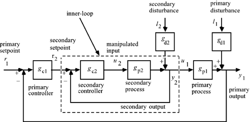
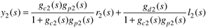
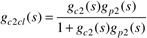
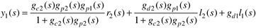
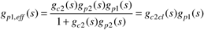
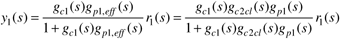
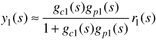

| [ Team LiB ] |
|
10.3 Cascade-Control AnalysisThere are two common ways to represent a cascade-control system in transfer function form: series cascade and parallel cascade. The series cascade representation shown in Figure 10-8 is the most common, so it will be used in the analysis performed in this section. Students interested in analysis using the parallel structure can work Exercise 11. Figure 10-8. Series cascade structure. We use the following algebraic manipulations to understand the effect of the secondary (inner-loop) on the primary (or outer) loop. Notice that the secondary output can be written  The secondary closed-loop transfer function can be defined as  Further analysis yields  After tuning the inner loop, we can use the following transfer function to design the outer-loop controller.  and the closed-loop relationship for a primary setpoint change is  where it is clear that the secondary closed-loop transfer function affects the primary control loop. Notice that if the secondary control loop is much faster than the primary loop, so that gc2CL = 1 (on a relative time scale to the primary control loop), then the closed-loop transfer function for the primary loop is  |
| [ Team LiB ] |
|